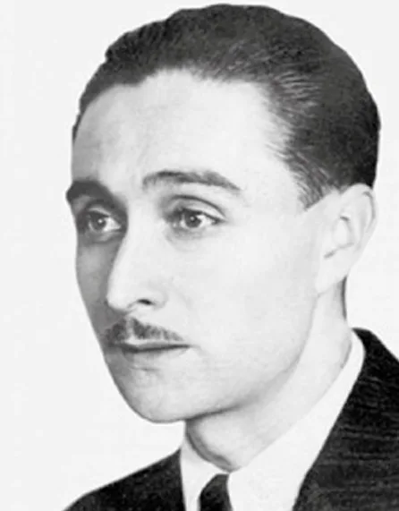

Óscar Castro Zúñiga
Poeta y novelista de la tierra y el pueblo (1910 - 1947)

Reseña Biográfica
Nacido en Rancagua, Chile, Óscar Castro es una de las voces más auténticas de la literatura chilena. Su obra destaca por rescatar la identidad del mundo campesino y minero, logrando una mezcla perfecta entre el lenguaje culto y el habla popular.
Hitos Importantes
- Lírica: Fundador del grupo literario "Los Inútiles", su poesía es cristalina y melancólica.
- Narrativa: Autor de "Llampo de sangre", novela fundamental que retrata la vida en las minas.
- Post mortem: Su obra "La vida simplemente" se convirtió en un clásico de la literatura nacional.
- Oficio: Trabajó como periodista y docente, siempre ligado a su ciudad natal.